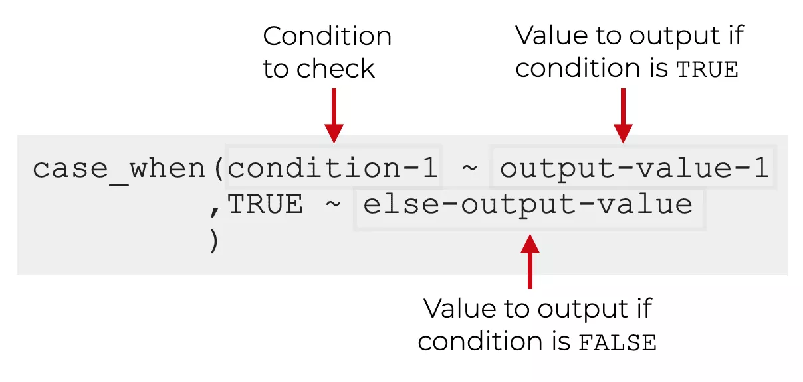
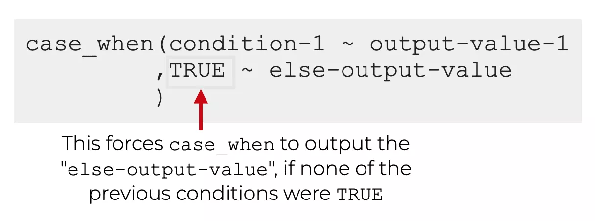
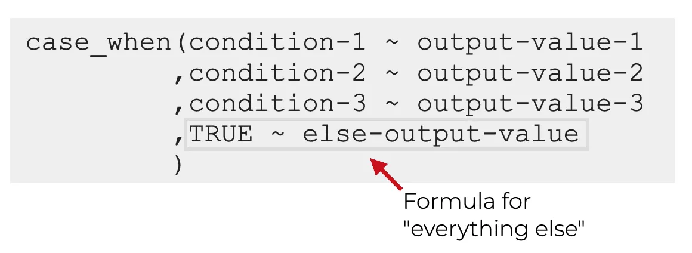

Dplyr bietet neben dem berechnen von neuen Variablen und der Möglichkeit Datensätze effizient zusammenzufassen noch viele weitere Funktionen, die es ermöglichen tiefergehende Änderungen an einem Datensatz vorzunehmen. Dazu gehören bspw. die Funktionen case_when() und pivot_longer() bzw. pivot_wider(). case_when() kann dazu genutzt werden, Variablen in Abhängigkeit von bestimmten Bedingungen umzuformen und wird in der Regel zusammen mit mutate() verwendet. pivot_longer() bzw. pivot_wider() wird dazu genutzt einen breiten (wide) Datensatz in einen langen (long) Datensatz umzuwandeln oder umgekehrt.
2case_when() - if-else Verknüpfüngen für multiple Bedingungen
Die case_when Funktion in dplyr ermöglicht es, basierend auf bestimmten Bedingungen verschiedene Werte für eine Spalte in einem Datensatz auszuwählen und abhängig vom Variablenwert einen neue Variable zu erstellen. Es ist eine sehr einfache Möglichkeit, if-else Statements in eine dplyr-Pipeline zu integrieren.
Die Syntax eines case_when() Befehles entspricht einer einfachen if oder if-else Verknüpfung. Eine if-else Verknüpfung prüft eine Bedingung und führt wenn diese Erfüllt ist einen definierten Befehl aus. Ist die Bedingung nicht erfüllt, wird andernfalls (else) ein anderer Befehl ausgeführt:
Code
# Vektor von Zahlen darauf testen, ob sie gerade oder ungerade sind:zahlen <-c(seq(1:10))# Wenn die aktuelle Zahl des Vektors durch zwei geteilt keinen Rest hat, dann schreibe Gerade, ansonsten Ungerade.ifelse(zahlen %%2==0,"Gerade","Ungerade")
case_when() funktioniert nach der Gleichen Logik:

Dabei wird immer zuerst die if-Bedinungen und deren Output definiert und anschließend mit TRUE die else Bedingung, welche angibt was passiert wenn die if - Bedingung nicht zutrifft:

Code
zahlen <-c(seq(1:10))# Wenn die aktuelle Zahl des Vektors durch zwei# geteilt keinen Rest hat, dann schreibe Gerade, # ansonsten Ungerade.case_when(zahlen %%2==0~"Gerade",TRUE~"Ungerade")
Der Unterschied von case_when() und ifelse() ist, dass mit case_when() auch mehrere Bedingungen definiert werden können (z.B. wenn eine Variable in mehrere Kategorien eingeteilt werden soll):

Hier gibt es auch ein finales else Statement, dieses muss aber nicht sein, solange die Kategorien alle Fälle abdecken!
2.0.1case_when(): Beispiele
Das folgende ist ein einfaches Beispiel, bei dem case_when() verwendet wird, um in einem Datensatz eine neue Spalte Alter_Kategorie anhand des Werts in der Spalte Alter zu kategorisieren. Wenn eine neue Spalte erstellt werden soll, muss case_when() immer mit mutate() kombiniert werden:
Code
# Beispiel Datensatz erstellendf <-data.frame(Name =c("Peter", "Anna", "Max"),Alter =c(25, 35, 45))head(df)# mutate und case_when verwenden, um neue Variable in Abhängigkeit vom Alter zu erstellen:df %>%mutate(Alter_Kategorie =case_when( Alter <=25~"jung", Alter >25& Alter <=35~"mittel", Alter >35~"alt" ))
3 Long- und Wide-Datenformat - Datentransformation in dplyr
Nun haben wir die Daten von Frenken et al. neu kodiert und die nötigen Informationen im Datensatz, um mit MPTinR zu arbeiten. Allerdings liegen die Daten noch im sogenannten long - Format vor. Oftmals ist es jedoch notwendig, Daten entweder von einem long in ein wide Format oder umgekehrt zu transfomieren. Im Kontext von Datenanalyse und statistischer Modellierung gibt es in der Regel zwei Haupttypen von Datenformaten: wide-Format (breit-Format) und long-Format (lang-Format).
3.1 Wide-Format
In einem wide Format sind die verschiedenen Merkmale einer einzigen Beobachtung in separaten Spalten dargestellt.
Eine einzige Zeile in einem breiten Datensatz repräsentiert eine Beobachtung.
Beispiel: Ein Datensatz, der Informationen über die Leistung von Schülern in verschiedenen Fächern (Mathematik, Englisch, Wissenschaft) enthält, wäre in einem breiten Format dargestellt, wobei jede Spalte einem bestimmten Fach entspricht.
Vorteil: Es ist einfach, schnelle Übersichten über große Datenmengen zu erhalten.
Im long Format sind alle Merkmale einer einzigen Beobachtung in einer Zeile dargestellt.
Eine einzige Spalte in einem long Datensatz repräsentiert ein bestimmtes Merkmal.
Beispiel: Ein Datensatz, der Informationen über die Leistung von Schülern in verschiedenen Fächern (Mathematik, Englisch, Wissenschaft) enthält, könnte in einem langen Format dargestellt werden, wobei jede Zeile einer bestimmten Schüler-Fach-Kombination entspricht.
Vorteil: Es ist einfach, bestimmte Merkmale für verschiedene Beobachtungen zu vergleichen oder zu analysieren. Außerdem ist es für manche statistische Methoden, wie lineare Regression oder einer ANOVA, das bevorzugte Format.
Es ist wichtig, das Konzept des wide- und long-Formats zu verstehen, da es bei der Datenaufbereitung und Analyse eine wichtige Rolle spielt. Zum Beispiel kann ein wide -Datensatz schwer zu analysieren sein, wenn man Vergleiche zwischen bestimmten Merkmalen über mehrere Beobachtungen hinweg machen möchte (z.b. bei Varianzanalysen). Hier ist es oft besser, den Datensatz in ein long-Format zu bringen.Umgekehrt kann es der Fall sein, das eine bestimmte Analyseform oder Modellierung die Daten im wide-Format
3.3 pivot - Funktionen in dplyr
Die Funktionen pivot_wider und pivot_longer gehören zu den Funktionen von dplyr und dienen dazu, Datensätze zu transformieren.
pivot_wider verwandelt einen long-Format Datensatz in einen wide-Format Datensatz, indem es die Werte einer bestimmten Spalte zu neuen Spalten umbenennt. Dies kann manuell durchgeführt werden, aber pivot_wider macht dies automatisch und erleichtert so die Datentransformation:
pivot_longer verwandelt einen wide-Format Datensatz in einen long-Format Datensatz, indem es die Spalten mit bestimmten Werten in einer neuen Spalte zusammenfasst.
Ein Beispiel für den Einsatz von pivot_wider:
Code
# long data examplelong_data <-tibble(name =c("John", "Jane", "Jim", "John", "Jane", "Jim"),subject =c("physics", "physics", "physics", "math", "math", "math"),score =c(85, 90, 80, 75, 80, 70))long_data## # A tibble: 6 × 3## name subject score## <chr> <chr> <dbl>## 1 John physics 85## 2 Jane physics 90## 3 Jim physics 80## 4 John math 75## 5 Jane math 80## 6 Jim math 70# pivot to wide formatpivot_wider(long_data, names_from = subject, values_from = score)## # A tibble: 3 × 3## name physics math## <chr> <dbl> <dbl>## 1 John 85 75## 2 Jane 90 80## 3 Jim 80 70
Ein Beispiel für den Einsatz von pivot_longer:
Code
# wide data examplewide_df <-tibble(name =c("John", "Jane", "Jim"),Mathe_Note =c(85, 90, 80),Englisch_Note =c(75, 80, 70))wide_df## # A tibble: 3 × 3## name Mathe_Note Englisch_Note## <chr> <dbl> <dbl>## 1 John 85 75## 2 Jane 90 80## 3 Jim 80 70# pivot to long formatpivot_longer(wide_df, cols =c(Mathe_Note, Englisch_Note), names_to ="Schüler", values_to ="Note")## # A tibble: 6 × 3## name Schüler Note## <chr> <chr> <dbl>## 1 John Mathe_Note 85## 2 John Englisch_Note 75## 3 Jane Mathe_Note 90## 4 Jane Englisch_Note 80## 5 Jim Mathe_Note 80## 6 Jim Englisch_Note 70
3.4 Argumente für pivot_longer und pivot_wider
pivot_longer benötigt mindestens zwei Argumente:
cols: Dies ist ein Zeichenvektor, der angibt, welche Spalten im Datensatz zusammengefasst werden sollen. -Schüler_ID bedeutet zum Beispiel, dass alle Spalten außer Schüler_ID zusammengefasst werden sollen.
names_to: Dies ist ein Zeichenvektor, der den Namen der neuen Spalte angibt, in der die zusammengefassten Werte gespeichert werden.
values_to: Dies ist ein Zeichenvektor, der den Namen der neuen Spalte angibt, in der die Werte gespeichert werden, die aus den zusammengefassten Spalten stammen.
pivot_wider benötigt mindestens zwei Argumente:
names_from: Dies ist ein Zeichenvektor, der angibt, welche Spalte als Namen für die neuen Spalten verwendet werden soll.
values_from: Dies ist ein Zeichenvektor, der angibt, welche Spalte als Werte für die neuen Spalten verwendet werden soll.
Beide Funktionen haben auch weitere optionale Argumente wie values_fill und names_prefix oder names_sep()um die Daten bei Bedarf weiter anzupassen.
4 Praktisches Beispiel
Im nächstes Beipsiel werden wir einen Datensatz umformen, mit dem wir uns im nächsten Workshop zu MPT-Modellen beschäftigen werden. Der Datensatz enthält fünf Spalten, die die Daten aus einem Priming-Experiment codieren. Insgesamt hat jede Versuchsperson 4 Bedingungen durchlaufen, die in der Spalte stim codiert sind (bg,bp,wg,wp). In jeder dieser Bedingungen mussten die VP eine binäre Entscheidungsaufgabe bearbeiten. in den Spalten hits und miss ist codiert, ob die VP die richtige oder falsche Entscheidung getroffen haben. Die Spalte ntrials gibt die Gesamtzahl der Versuche einer Person pro Bedingung an.
Um in der Praxis mit dem Datensatz arbeiten zu können, müssen wir diesen jedoch zunächst in das richtige Format bringen. Der Datensatz liegt momentan im long-Format vor, für bestimmte Analysen muss dieser jedoch in das wide-Format umgewandelt werden. Das führt dazu, dass es für jede Bedingung je eine Spalte für hits und misses geben wird, also z.B. hits_bg und misses_bg.
Nach der Umformung, sieht der Datensatz dann wie folgt aus:
names_from = c(stim) - Die neuen Spalten sollen aus der Spalte stim benannt werden - (bg,bp,wp,wg)
values_from = c("hits","miss") - in den neuen Spalten sollen die Werte der Hits und Miss Spalten stehen - durch den ersten und zweiten Schritt entstehen also Spalten, die jeweils hits_bg etc. enthalten. Also die Hits aus der Bedingung “bg” usw.
id_cols - dies soll für jedes Subject einzeln geschehen.
5 Übungen
5.1case_when()
1.) Verwenden Sie case_when(), um eine neue Spalte mit der Bezeichnung “Note_Kategorie” zu erstellen, die “Sehr gut” für Noten über 90, “Gut” für Noten zwischen 80 und 90 und “Schlecht” für Noten unter 80 angibt.
Code
df <-data.frame(Note =c(89, 92, 88, 76, 88, 72, 92, 95, 98))# Your Code Here
2.) Verwenden Sie case_when(), um eine neue Spalte mit der Bezeichnung “Bestanden” zu erstellen, um zu Prüfen ob ein Schüler einer bestimmten Schulform eine Prüfung bestanden hat. Die Bestehensgrenzen sind wie folgt.
- Für die Hauptschule liegt die Bestehensgrenze bei 50 %
- Für die Realschule liegt die Bestehensgrenze bei 60 %
- Für das Gymnasium liegt die Bestehensgrenze bei 70 %
Kodieren Sie das bestehen entweder mit “Pass” oder “Fail”.
Code
df <-data.frame(Note =runif(100,min=0, max=100),Schulform =sample(c("Gymnasium","Realschule", "Hauptschule"),size =100, replace = T))# Your Code here
3.) Nutzen Sie die Funktion case_when und die dplyr-Library in R, um eine neue Spalte in dem Datensatz “df” zu erstellen, die die Einkommenskategorie jeder Person basierend auf ihrem Berufsstatus und ihrem Einkommen kategorisiert. Die Einkommenskategorien sollten wie folgt sein:
Für Angestellte mit einem Einkommen von bis zu 50.000: “niedrig”
Für Angestellte mit einem Einkommen zwischen 50.000 und 75.000: “mittel”
Für Angestellte mit einem Einkommen über 75.000: “hoch”
Für Freiberufler mit einem Einkommen von bis zu 60.000: “niedrig”
Für Freiberufler mit einem Einkommen zwischen 60.000 und 100.000: “mittel”
Für Freiberufler mit einem Einkommen über 100.000: “hoch”
Für Ruheständler mit einem Einkommen von bis zu 30.000: “niedrig”
Für Ruheständler mit einem Einkommen über 30.000: “mittel_hoch”
Code
df <-data.frame(ID =c("Peter", "Anna", "Max"),Alter =c(25, 35, 45),Berufsstatus =c("Angestellter", "Freiberufler", "Ruheständler"),Einkommen =c(45000, 75000, 32000))# Your Code here
5.2 Pivotting
1.) Konvertieren Sie die folgenden Datensatz von wide to long. Erstellen Sie aus den Spalten zwei neue Spalten mit den Namen (month und index). Nutzen Sie dazu das Argument names_sep = "_". Die Werte sollen in die Spalte “N” geschrieben werden.
Tip: Sie müssen bei names_to einen Vektor mit den Namen der neuen Spalten angeben.
Code
df_wide <-data.frame(Jan_sales =c(10, 40, 70),Feb_sales =c(20, 50, 80),Mar_sales =c(30, 60, 90))# Your Code here
2.) Konvertieren Sie die folgendn Datensatz von long in wide.
---title: "Advanced Dplyr"author: "Jan Göttmann"format: html: code-fold: true code-tools: truelang: detoc: truenumber-sections: truenumber-depth: 4theme: simplex ---```{r include =FALSE}library(tidyverse)Study_2_dm <-read_csv("Study_2_dm.csv", col_types =cols(...1 =col_skip(), stimulus =col_factor(levels =c("gun","phone")), response =col_integer(), condition =col_factor(levels =c("black","white"))))freq_dat <- Study_2_dm %>%mutate(ACC =case_when(stimulus =="gun"& response ==0~1, stimulus =="gun"& response ==1~0, stimulus =="phone"& response ==1~1, stimulus =="phone"& response ==0~0))freq_dat <- freq_dat %>%group_by(subj_idx,stim) %>%summarise(hits =sum(ACC), ntrials=n(), miss=ntrials-hits)```## Fortgeschrittene Dplyr FunktionenDplyr bietet neben dem berechnen von neuen Variablen und der Möglichkeit Datensätze effizient zusammenzufassen noch viele weitere Funktionen, die es ermöglichen tiefergehende Änderungen an einem Datensatz vorzunehmen. Dazu gehören bspw. die Funktionen `case_when()` und `pivot_longer()` bzw. `pivot_wider()`. `case_when()` kann dazu genutzt werden, Variablen in Abhängigkeit von bestimmten Bedingungen umzuformen und wird in der Regel zusammen mit `mutate()` verwendet. `pivot_longer()` bzw. `pivot_wider()` wird dazu genutzt einen breiten (wide) Datensatz in einen langen (long) Datensatz umzuwandeln oder umgekehrt.## `case_when()` - if-else Verknüpfüngen für multiple BedingungenDie `case_when` Funktion in `dplyr` ermöglicht es, basierend auf bestimmten Bedingungen verschiedene Werte für eine Spalte in einem Datensatz auszuwählen und abhängig vom Variablenwert einen neue Variable zu erstellen. Es ist eine sehr einfache Möglichkeit, `if-else` Statements in eine dplyr-Pipeline zu integrieren.Die Syntax eines `case_when()` Befehles entspricht einer einfachen `if` oder `if-else` Verknüpfung. Eine `if-else` Verknüpfung prüft eine Bedingung und führt wenn diese Erfüllt ist einen definierten Befehl aus. Ist die Bedingung nicht erfüllt, wird andernfalls (`else`) ein anderer Befehl ausgeführt:\```{r}#| echo: true#| code-overflow: wrap #| output: false# Vektor von Zahlen darauf testen, ob sie gerade oder ungerade sind:zahlen <-c(seq(1:10))# Wenn die aktuelle Zahl des Vektors durch zwei geteilt keinen Rest hat, dann schreibe Gerade, ansonsten Ungerade.ifelse(zahlen %%2==0,"Gerade","Ungerade")````case_when()` funktioniert nach der Gleichen Logik:\\\{width="13cm"}\Dabei wird immer zuerst die if-Bedinungen und deren Output definiert und anschließend mit `TRUE` die `else` Bedingung, welche angibt was passiert wenn die if - Bedingung nicht zutrifft:\\{width="13cm"}```{r}#| echo: true#| code-overflow: wrap #| output: falsezahlen <-c(seq(1:10))# Wenn die aktuelle Zahl des Vektors durch zwei# geteilt keinen Rest hat, dann schreibe Gerade, # ansonsten Ungerade.case_when(zahlen %%2==0~"Gerade",TRUE~"Ungerade")```Der Unterschied von `case_when()` und `ifelse()` ist, dass mit `case_when()` auch mehrere Bedingungen definiert werden können (z.B. wenn eine Variable in mehrere Kategorien eingeteilt werden soll):{width="13cm" height="4.8cm"}Hier gibt es auch ein finales `else` Statement, dieses muss aber nicht sein, solange die Kategorien alle Fälle abdecken!#### `case_when()`: BeispieleDas folgende ist ein einfaches Beispiel, bei dem `case_when()` verwendet wird, um in einem Datensatz eine neue Spalte `Alter_Kategorie` anhand des Werts in der Spalte `Alter` zu kategorisieren. Wenn eine neue Spalte erstellt werden soll, muss `case_when()` immer mit `mutate()` kombiniert werden:```{r}#| echo: true#| code-overflow: wrap #| output: false# Beispiel Datensatz erstellendf <-data.frame(Name =c("Peter", "Anna", "Max"),Alter =c(25, 35, 45))head(df)# mutate und case_when verwenden, um neue Variable in Abhängigkeit vom Alter zu erstellen:df %>%mutate(Alter_Kategorie =case_when( Alter <=25~"jung", Alter >25& Alter <=35~"mittel", Alter >35~"alt" ))```## Long- und Wide-Datenformat - Datentransformation in dplyrNun haben wir die Daten von Frenken et al. neu kodiert und die nötigen Informationen im Datensatz, um mit `MPTinR` zu arbeiten. Allerdings liegen die Daten noch im sogenannten `long` - Format vor. Oftmals ist es jedoch notwendig, Daten entweder von einem `long` in ein `wide` Format oder umgekehrt zu transfomieren. Im Kontext von Datenanalyse und statistischer Modellierung gibt es in der Regel zwei Haupttypen von Datenformaten: `wide-Format` (breit-Format) und `long-Format` (lang-Format).### Wide-Format- In einem wide Format sind die verschiedenen Merkmale einer einzigen Beobachtung in separaten Spalten dargestellt.- Eine einzige Zeile in einem breiten Datensatz repräsentiert eine Beobachtung.- Beispiel: Ein Datensatz, der Informationen über die Leistung von Schülern in verschiedenen Fächern (Mathematik, Englisch, Wissenschaft) enthält, wäre in einem breiten Format dargestellt, wobei jede Spalte einem bestimmten Fach entspricht.- Vorteil: Es ist einfach, schnelle Übersichten über große Datenmengen zu erhalten.Beispiel:```{r}#| echo: true#| output: true#| warning: false#| code-overflow: wrap#| collapse: truewide_df <-data.frame(Schüler_ID =c(1, 2, 3), Mathe =c(89, 76, 92), Englisch =c(92, 88, 95), Wissenschaft =c(88, 72, 98))wide_df```### Long-Format- Im long Format sind alle Merkmale einer einzigen Beobachtung in einer Zeile dargestellt.- Eine einzige Spalte in einem long Datensatz repräsentiert ein bestimmtes Merkmal.- Beispiel: Ein Datensatz, der Informationen über die Leistung von Schülern in verschiedenen Fächern (Mathematik, Englisch, Wissenschaft) enthält, könnte in einem langen Format dargestellt werden, wobei jede Zeile einer bestimmten Schüler-Fach-Kombination entspricht.- Vorteil: Es ist einfach, bestimmte Merkmale für verschiedene Beobachtungen zu vergleichen oder zu analysieren. Außerdem ist es für manche statistische Methoden, wie lineare Regression oder einer ANOVA, das bevorzugte Format.Beispiel:```{r}#| echo: true#| output: true#| warning: false#| code-overflow: wrap#| collapse: truelong_df <-data.frame(Schüler_ID =c(rep(1, 3), rep(2, 3), rep(3, 3)), Fach =c(rep("Mathe", 3), rep("Englisch", 3), rep("Wissenschaft", 3)), Note =c(89, 92, 88, 76, 88, 72, 92, 95, 98))long_df```Es ist wichtig, das Konzept des `wide`- und `long`-Formats zu verstehen, da es bei der Datenaufbereitung und Analyse eine wichtige Rolle spielt. Zum Beispiel kann ein `wide` -Datensatz schwer zu analysieren sein, wenn man Vergleiche zwischen bestimmten Merkmalen über mehrere Beobachtungen hinweg machen möchte (z.b. bei Varianzanalysen). Hier ist es oft besser, den Datensatz in ein `long`-Format zu bringen.Umgekehrt kann es der Fall sein, das eine bestimmte Analyseform oder Modellierung die Daten im `wide`-Format### pivot - Funktionen in dplyrDie Funktionen `pivot_wider` und `pivot_longer` gehören zu den Funktionen von `dplyr` und dienen dazu, Datensätze zu transformieren.- `pivot_wider` verwandelt einen long-Format Datensatz in einen wide-Format Datensatz, indem es die Werte einer bestimmten Spalte zu neuen Spalten umbenennt. Dies kann manuell durchgeführt werden, aber `pivot_wider` macht dies automatisch und erleichtert so die Datentransformation:- `pivot_longer` verwandelt einen wide-Format Datensatz in einen long-Format Datensatz, indem es die Spalten mit bestimmten Werten in einer neuen Spalte zusammenfasst.Ein Beispiel für den Einsatz von `pivot_wider`:```{r}#| echo: true#| output: true#| warning: false#| code-overflow: wrap#| collapse: true# long data examplelong_data <-tibble(name =c("John", "Jane", "Jim", "John", "Jane", "Jim"),subject =c("physics", "physics", "physics", "math", "math", "math"),score =c(85, 90, 80, 75, 80, 70))long_data# pivot to wide formatpivot_wider(long_data, names_from = subject, values_from = score)```Ein Beispiel für den Einsatz von `pivot_longer`:```{r}#| echo: true#| output: true#| warning: false#| code-overflow: wrap#| collapse: true# wide data examplewide_df <-tibble(name =c("John", "Jane", "Jim"),Mathe_Note =c(85, 90, 80),Englisch_Note =c(75, 80, 70))wide_df# pivot to long formatpivot_longer(wide_df, cols =c(Mathe_Note, Englisch_Note), names_to ="Schüler", values_to ="Note")```### Argumente für `pivot_longer` und `pivot_wider``pivot_longer` benötigt mindestens zwei Argumente:- `cols`: Dies ist ein Zeichenvektor, der angibt, welche Spalten im Datensatz zusammengefasst werden sollen. `-Schüler_ID` bedeutet zum Beispiel, dass alle Spalten außer `Schüler_ID` zusammengefasst werden sollen.- `names_to`: Dies ist ein Zeichenvektor, der den Namen der neuen Spalte angibt, in der die zusammengefassten Werte gespeichert werden.- `values_to`: Dies ist ein Zeichenvektor, der den Namen der neuen Spalte angibt, in der die Werte gespeichert werden, die aus den zusammengefassten Spalten stammen.`pivot_wider` benötigt mindestens zwei Argumente:- `names_from`: Dies ist ein Zeichenvektor, der angibt, welche Spalte als Namen für die neuen Spalten verwendet werden soll.- `values_from`: Dies ist ein Zeichenvektor, der angibt, welche Spalte als Werte für die neuen Spalten verwendet werden soll.Beide Funktionen haben auch weitere optionale Argumente wie `values_fill` und `names_prefix` oder `names_sep()`um die Daten bei Bedarf weiter anzupassen.## Praktisches Beispiel Im nächstes Beipsiel werden wir einen Datensatz umformen, mit dem wir uns im nächsten Workshop zu MPT-Modellen beschäftigen werden. Der Datensatz enthält fünf Spalten, die die Daten aus einem Priming-Experiment codieren. Insgesamt hat jede Versuchsperson 4 Bedingungen durchlaufen, die in der Spalte `stim` codiert sind (bg,bp,wg,wp). In jeder dieser Bedingungen mussten die VP eine binäre Entscheidungsaufgabe bearbeiten. in den Spalten `hits` und `miss` ist codiert, ob die VP die richtige oder falsche Entscheidung getroffen haben. Die Spalte `ntrials` gibt die Gesamtzahl der Versuche einer Person pro Bedingung an. ```{r}head(freq_dat,5)```Um in der Praxis mit dem Datensatz arbeiten zu können, müssen wir diesen jedoch zunächst in das richtige Format bringen. Der Datensatz liegt momentan im `long`-Format vor, für bestimmte Analysen muss dieser jedoch in das `wide`-Format umgewandelt werden. Das führt dazu, dass es für jede Bedingung je eine Spalte für `hits` und `misses` geben wird, also z.B. `hits_bg` und `misses_bg`.Nach der Umformung, sieht der Datensatz dann wie folgt aus:```{r}#| echo: true#| output: true#| warning: false#| code-overflow: wrap#| collapse: truehead(freq_dat %>%pivot_wider(names_from =c("stim"),values_from =c("hits","miss"),id_cols="subj_idx"),5)```Was passiert hier genau ? Schritt für Schritt:1. `names_from = c(stim)` - Die neuen Spalten sollen aus der Spalte `stim` benannt werden - (bg,bp,wp,wg)2. `values_from = c("hits","miss")` - in den neuen Spalten sollen die Werte der Hits und Miss Spalten stehen - durch den ersten und zweiten Schritt entstehen also Spalten, die jeweils `hits_bg` etc. enthalten. Also die Hits aus der Bedingung "bg" usw.3. `id_cols` - dies soll für jedes Subject einzeln geschehen.## Übungen### `case_when()`1.) Verwenden Sie `case_when()`, um eine neue Spalte mit der Bezeichnung "Note_Kategorie" zu erstellen, die "Sehr gut" für Noten über 90, "Gut" für Noten zwischen 80 und 90 und "Schlecht" für Noten unter 80 angibt.```{r}#| echo: true#| output: true#| warning: false#| code-overflow: wrap#| collapse: truedf <-data.frame(Note =c(89, 92, 88, 76, 88, 72, 92, 95, 98))# Your Code Here```2.) Verwenden Sie case_when(), um eine neue Spalte mit der Bezeichnung "Bestanden" zu erstellen, um zu Prüfen ob ein Schüler einer bestimmten Schulform eine Prüfung bestanden hat. Die Bestehensgrenzen sind wie folgt. - Für die Hauptschule liegt die Bestehensgrenze bei 50 % - Für die Realschule liegt die Bestehensgrenze bei 60 % - Für das Gymnasium liegt die Bestehensgrenze bei 70 %Kodieren Sie das bestehen entweder mit "Pass" oder "Fail".```{r}#| echo: true#| output: false#| warning: false#| code-overflow: wrap#| collapse: truedf <-data.frame(Note =runif(100,min=0, max=100),Schulform =sample(c("Gymnasium","Realschule", "Hauptschule"),size =100, replace = T))# Your Code here```3.) Nutzen Sie die Funktion case_when und die dplyr-Library in R, um eine neue Spalte in dem Datensatz "df" zu erstellen, die die Einkommenskategorie jeder Person basierend auf ihrem Berufsstatus und ihrem Einkommen kategorisiert. Die Einkommenskategorien sollten wie folgt sein:- Für Angestellte mit einem Einkommen von bis zu 50.000: "niedrig"- Für Angestellte mit einem Einkommen zwischen 50.000 und 75.000: "mittel"- Für Angestellte mit einem Einkommen über 75.000: "hoch"- Für Freiberufler mit einem Einkommen von bis zu 60.000: "niedrig"- Für Freiberufler mit einem Einkommen zwischen 60.000 und 100.000: "mittel"- Für Freiberufler mit einem Einkommen über 100.000: "hoch"- Für Ruheständler mit einem Einkommen von bis zu 30.000: "niedrig"- Für Ruheständler mit einem Einkommen über 30.000: "mittel_hoch"```{r}#| echo: true#| output: true#| warning: false#| code-overflow: wrap#| collapse: truedf <-data.frame(ID =c("Peter", "Anna", "Max"),Alter =c(25, 35, 45),Berufsstatus =c("Angestellter", "Freiberufler", "Ruheständler"),Einkommen =c(45000, 75000, 32000))# Your Code here```### Pivotting1.) Konvertieren Sie die folgenden Datensatz von wide to long. Erstellen Sie aus den Spalten zwei neue Spalten mit den Namen (month und index). Nutzen Sie dazu das Argument `names_sep = "_"`. Die Werte sollen in die Spalte "N" geschrieben werden.\Tip: Sie müssen bei `names_to` einen Vektor mit den Namen der neuen Spalten angeben.```{r}#| echo: true#| output: true#| warning: false#| code-overflow: wrap#| collapse: truedf_wide <-data.frame(Jan_sales =c(10, 40, 70),Feb_sales =c(20, 50, 80),Mar_sales =c(30, 60, 90))# Your Code here```2.) Konvertieren Sie die folgendn Datensatz von long in wide.```{r}#| echo: true#| output: false#| warning: false#| code-overflow: wrap#| collapse: true df_long <-data.frame(ID =c("A1", "A2", "A3", "A1", "A2", "A3", "A1", "A2", "A3"),month =c("Jan", "Jan", "Jan", "Feb", "Feb", "Feb", "Mar", "Mar", "Mar"),sales =c(10, 40, 70, 20, 50, 80, 30, 60, 90))# Your Code Here```